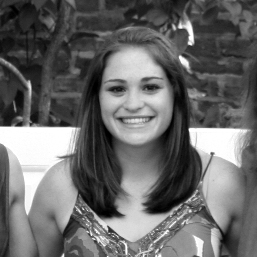

ABOUT ME


After I graduated in 2011 from the University of Virginia with a degree in Environmental Science, I started to persue a career in graphic design. I had taken some design classes in college, but for the most part, I'm self taught.
It was a natural progression from graphic to web to UI design. UI design seems like the perfect profession to allow me to use both my left and right brain.
By day, I have a full time job at a company in Madison, WI. But by night (and on the weekends), I'm have my hands in several freelance projects.
If you're interested in in my work, please drop me a line!